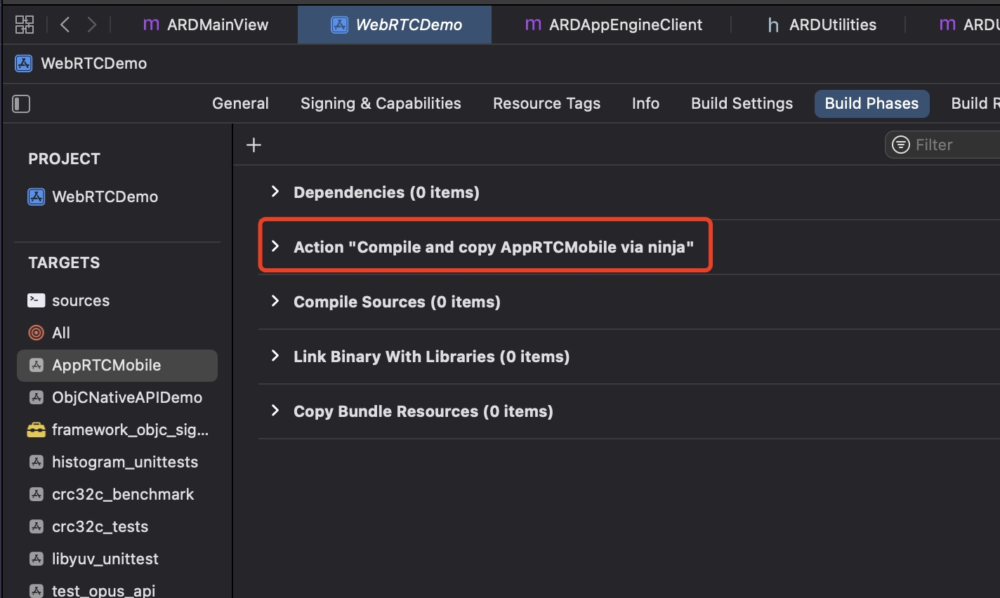
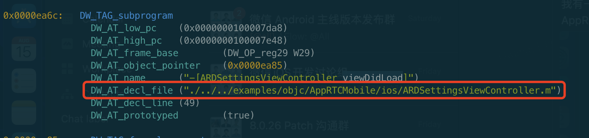
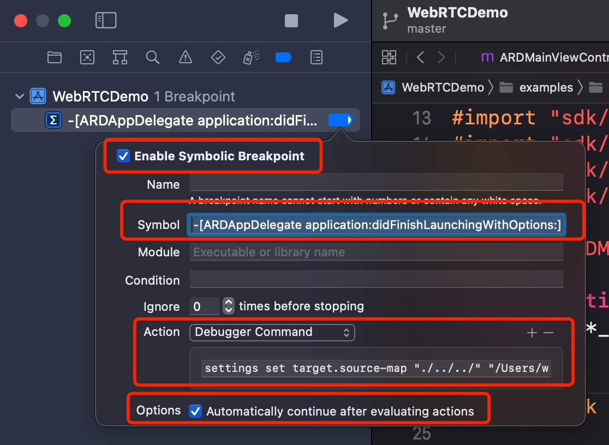
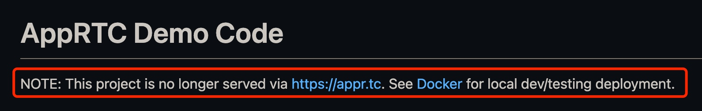
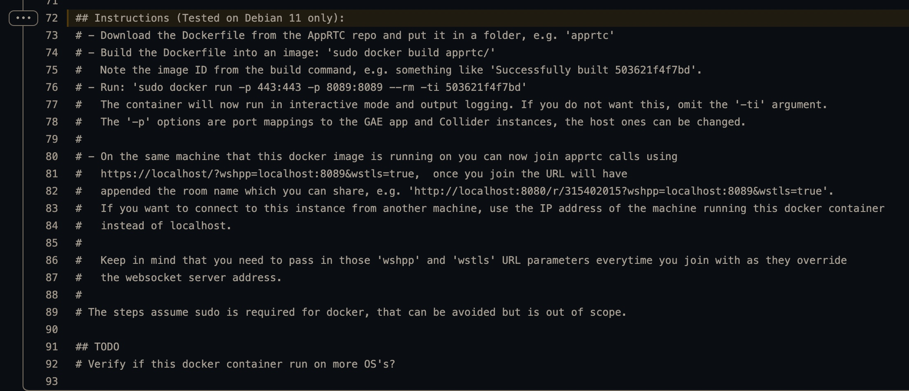
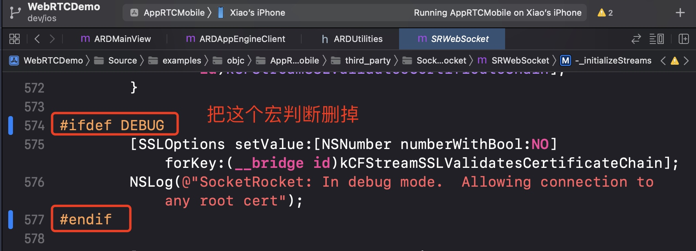
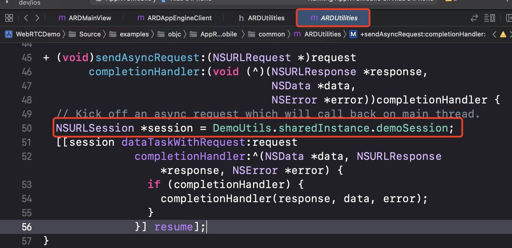
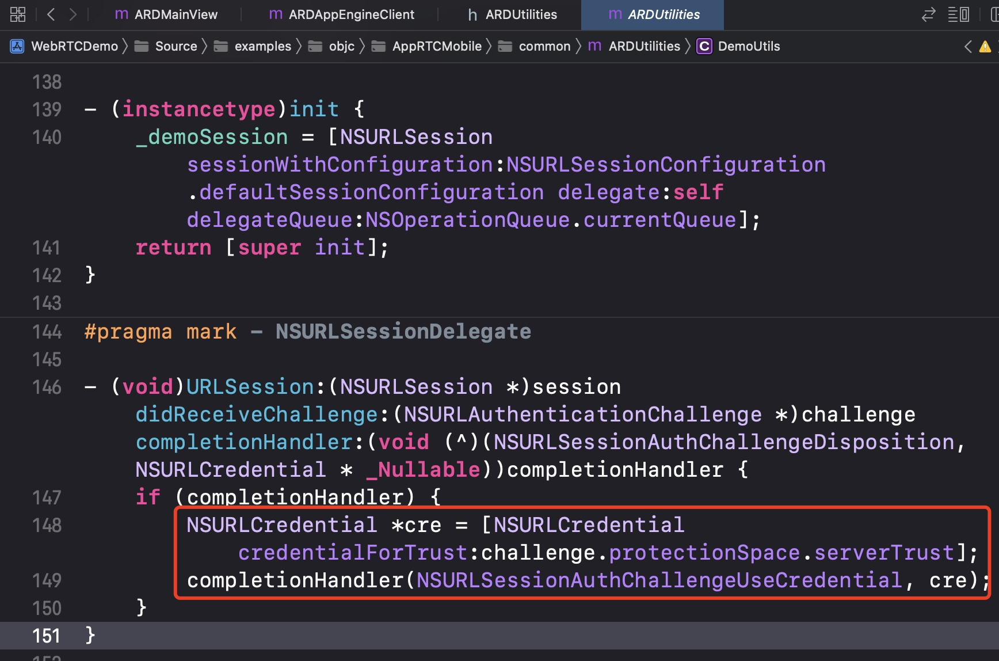

WebRTC iOS 尝鲜
最近几天将 WebRTC 编译出 iOS 平台的 framework，并将官方 demo (AppRTCMobile) 运行在真机上。此外，还在局域网搭建了 WebRTC 服务器，使用官方 demo 实现了音视频通话。
实际过程比想象的麻烦一些，踩了一些坑，比如官方 demo 竟然无法加断点调试，花了大半天的时间才找到办法。记录和分享一下。
什么是 WebRTC
WebRTC 由 Google 开发和维护，RTC 全称为 Real-Time Communications，WebRTC 提供了简单的 API 实现了浏览器和移动设备之间的实时音视频通话。
编译 framework
WebRTC 提供了细致的文档，可以参照着搞。WebRTC iOS development
这里只列一下遇到的坑及解决办法。
1. 签名问题
编 framework 不需要签名，所以要加上 ios_enable_code_signing=false 参数。举个栗子 👇🏻
gn gen ${BUILD_DIR} --args='target_os="ios" target_cpu="arm64" ios_enable_code_signing=false'
编译 demo app
同样的，先参考 WebRTC iOS development 搞最直接。这里列一下遇到的问题及 tips。
1. 生成 xcode project 时的参数
官方文档里生成 xcode 工程时用到的参数比较少，实际上还可以指定更多的参数，建议用下面这个命令。👇🏻
比如 xcode-build-system 要设置为 new，否则用高版本 xcode 会遇到编译问题。
gn gen out/ios_demo --args='target_os="ios" target_cpu="arm64"' --ide=xcode --xcode-project="WebRTCDemo" --xcode-build-system="new" --xcode-configs="Debug;Release"
更多的 gn 参数可以参考这里。
2. 签名问题
要编译到真机，就绕不开签名问题。生成 xcode project 时会执行下面这个命令寻找 Apple Development 的证书：
xcrun security find-identity -v -p codesigning
但是有时候本地会有多个 Apple Development 证书，会报错提示找不到唯一的证书。
可以修改 build/config/ios/ios_sdk.gni 里的 ios_code_signing_identity_description，让上面的命令能找到唯一的证书即可。
3. demo 无法加断点进行单步调试
虽然能生成 xcode 工程，但是本质上还是用 gn 编译的。所以如果想用 xcode 源码调试，其实就相当于用 xcode 调试一个从其他地方编译的 app。直接运行加断点，会发现无法走到对应的断点。

无法加断点，大概率是因为 DWARF 有问题，用 dwarfdump 查看一下 demo 的符号信息：

可以看到行号、函数名、文件名都有。不过其中 DW_AT_decl_line 是相对路径，所以猜测这里可能是路径问题，导致 xcode 找不到源码，所以无法调试。
那么有没办法将 DW_AT_decl_line 改为绝对路径试试呢？其实是可以的，可以使用 lldb 设置一下 source map。
(lldb) settings set target.source-map "./../../" "/Users/wangxiao/WeChat/WebRTC/webrtc_ios/src"
上面的命令里有两个路径，其中 "./../../" 就是符号信息里的 DW_AT_decl_line 的前缀，"/Users/wangxiao/WeChat/WebRTC/webrtc_ios/src/" 是本地源码路径。
相当于把
./../../examples/objc/AppRTCMobile/ios/ARDSettingsViewController.m
替换为
/Users/wangxiao/WeChat/WebRTC/webrtc_ios/src/examples/objc/AppRTCMobile/ios/ARDSettingsViewController.m
这样就可以对应的上了。
另外，可以给 xcode 添加符号断点，比如在执行 -[ARDAppDelegate application:didFinishLaunchingWithOptions:] 时自动设置 source-map，就省的每次手动设置了。

在实际操作过程中，我发现每次运行 app 后，已有的断点会不生效，把断点去掉重新添加就正常，或许是 xcode 的 bug吧，反正遇到无法断点调试的时候，可以尝试把断点干掉重新添加试试，还不行就重启 xcode 和电脑。
最后，这里提到了 DWARF，想了解更多可以参考这篇文章 iOS 符号之 DWARF 和 dSYM
搭建服务器
demo 里用的 RTC 服务器是 https://appr.tc，不过已经被 Google 停掉了，所以现在想体验 demo 需要自己搭建服务器。
因为只需要满足测试用，所以本机局域网搭建一下就可以了。Google 提供了 docker 的方式，可以很方便的搭建服务器。具体参考 AppRTC Demo Code。

在 Dockerfile 的最底下有指引，参照着搞就行。

过程中会遇到一些问题，这里列一下：
1. 局域网的其他机器访问被拒绝
按照文档操作之后，访问 https://localhost/r/820971301?wshpp=localhost:8089&wstls=true 会报错：👇🏻
Request host is not whitelist enabled for this server. Please use the --host command-line flag to whitelist a specific host (recommended) or use --enable_host_checking to disable host checking. See the command-line flags help text for more information.
需要修改 dockerfile，将 dev_appserver.py --host 0.0.0.0 替换为 dev_appserver.py --enable_host_checking=false
2. socket 总是链接失败，提示 EOF
这个是因为 socket 的 tls 证书是本地生成的，无法通过安全校验。如果不是生产环境的话，可以关闭 证书校验。

3. NSURLSession tls 证书问题
官方 demo 提供了 room server，访问 room server 是通过 NSURLSession，因为我们的证书是临时的，所以也需要关掉 NSURLSession 对证书的校验。


效果录屏
转载请注明出处：WebRTC iOS 尝鲜 - 专业点
欢迎关注我的公众号

推荐

公众号推荐
欢迎关注我的公众号一起愉快的交流。